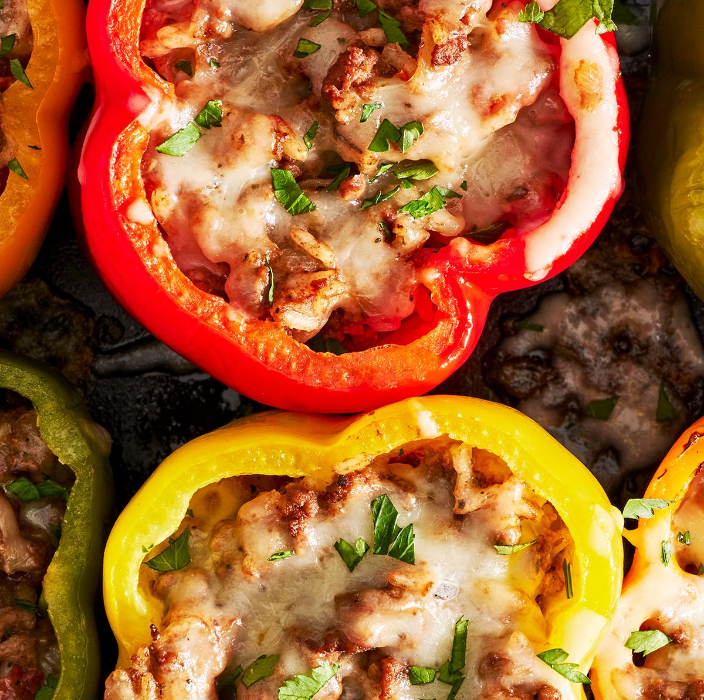

Classic Stuffed Peppers

Description
Strong enough to hold their shape, peppers are large enough to hold a decent amount of filling while taking to a variety of flavors—they're the perfect vessel for countless combinations and ingredients. This versatile meal is not only simple to make, but feeds families big and small, making it a cheap and easy weeknight dinner legend.
Ingredients
- 1/2 c. uncooked white or brown rice
- 2 tbsp. extra-virgin olive oil, plus more for drizzling
- 1 medium yellow onion, chopped
- 3 cloves garlic, finely chopped
- 2 tbsp. tomato paste
- 1 lb. ground beef
- 1 (14.5-oz.) can diced tomatoes
- 1 1/2 tsp. dried oregano
- Kosher salt
- Freshly ground black pepper
- 6 bell peppers, tops and cores removed
- 1 c. shredded Monterey jack
- Chopped fresh parsley, for serving
Steps
- Preheat oven to 400°. In a small saucepan, prepare rice according to package instructions.
- Meanwhile, in a large skillet over medium heat, heat oil. Cook onion, stirring occasionally, until softened, about 7 minutes. Stir in garlic and tomato paste and cook, stirring, until fragrant, about 1 minute more. Add ground beef and cook, breaking up meat with a wooden spoon, until no longer pink, about 6 minutes. Drain excess fat.
- Stir in rice and diced tomatoes; season with oregano, salt, and pepper. Let simmer, stirring occasionally, until liquid has reduced slightly, about 5 minutes.
- Arrange peppers cut side up in a 13"x9" baking dish and drizzle with oil. Spoon beef mixture into each pepper. Top with cheese, then cover baking dish with foil.
- Bake peppers until tender, about 35 minutes. Uncover and continue to bake until cheese is bubbly, about 10 minutes more.
- Top with parsley before serving.